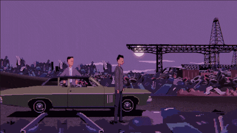
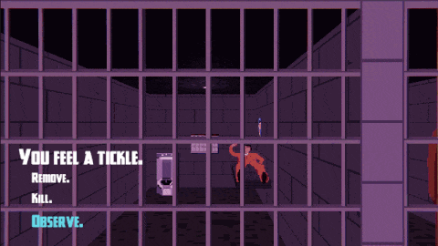
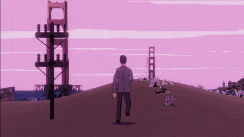
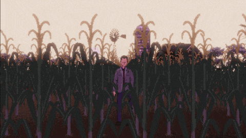
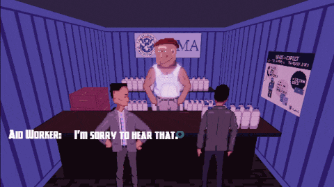
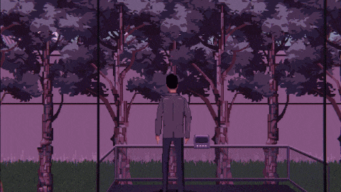

The San Francisco Bay Area...
"I never wanted to be a cop. No one wants to be a cop. But it's this or another year of solitary confinement at San Quentin. I hated San Francisco before it was destroyed. The rubble, mutants and sludge are no improvement."
Divisadero is a cli-fi, true crime narrative adventure that makes use of investigation and choice. It's a story driven game with adult themes and cinematic pixel art.
Explore real San Francisco landmarks and locations, recently destroyed by environmental disaster and war. Work with your partner to solve the crimes of a fallen city. Uncover your own backstory.
Divisadero will be available on Steam in 2024.





